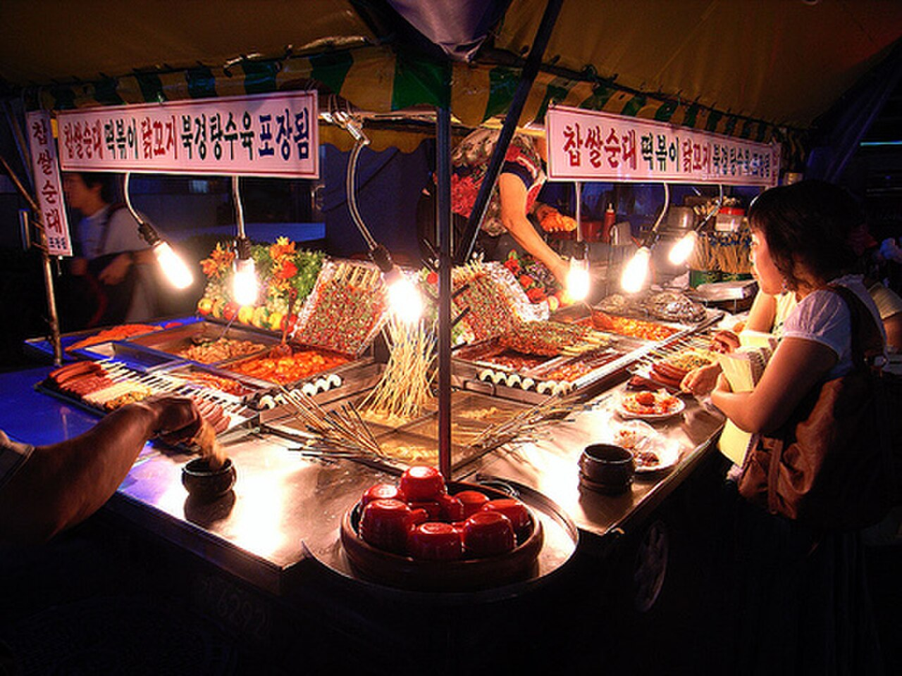
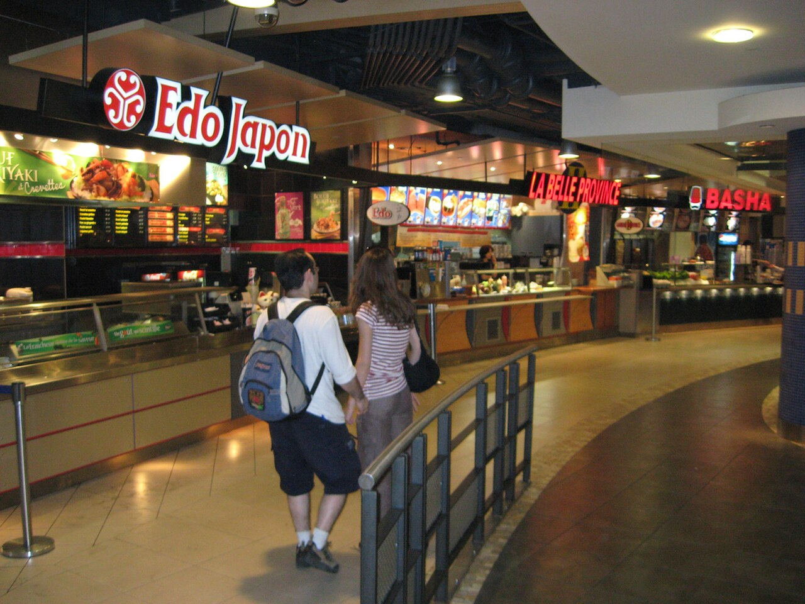

MSA.

© Wikimedia Commons · CC BY 2.0혼자 운영하는 포장마차에
손님 100만 명이 몰려오면?
- 01주문을 받는 것도 사장님
- 02조리하는 것도 사장님
- 03서빙하는 것도 사장님
- 04계산하는 것도 사장님
바로 이게 지금까지의 "모놀리식" 구조예요.
하나의 거대한 덩어리로 모든 걸 담는다
회원·주문·결제·채팅·알림 모든 기능이 하나의 코드베이스, 하나의 서버, 하나의 DB에 묶여 있는 구조. = 사장님 혼자 다 하는 포장마차
-
1
배포가 무겁다
버튼 색 하나만 바꿔도 전체 서비스를 재배포.
= 메뉴판 글씨 바꾸려고 가게 전체 리모델링 -
2
확장이 비효율적이다
검색 부하만 커져도 앱 전체를 통째로 복제.
= 떡볶이만 잘 팔려도 가게를 통째로 복제 -
3
장애가 번진다
알림 기능 오류 하나가 결제·로그인까지 멈춘다.
= 식기세척기 고장 → 전체 손님 대기
MSA란 무엇인가

© Danny Haak · CC BY-SA 2.0각 매장은 자기 주방·재료·직원을 따로 갖는다. 라멘집 재료가 떨어져도 김밥집은 계속 영업한다. 손님은 공동 입구(= API Gateway)로 들어와 원하는 매장에 주문한다.
각 서비스가 API로 서로 소통하는 구조.
한눈에 보는 차이
MSA가 가져다주는 4가지 힘
독립 배포
결제 팀이 새 기능을 배포해도 회원·채팅은 그대로 돌아간다. 배포 주기가 빨라진다.
= 라멘집만 신메뉴 개시, 김밥집은 영향 없음부분 확장
트래픽 몰리는 검색 서비스만 서버를 늘린다. 리소스를 필요한 곳에만 쓴다.
= 점심 피크에 떡볶이집만 알바 2명 추가장애 격리
알림 서비스가 죽어도 주문·결제는 살아있다. 전체가 한 번에 멈추지 않는다.
= 라멘집 가스 끊겨도 김밥집은 영업 가능기술 자유
한 서비스는 Java+MySQL, 다른 서비스는 Python+MongoDB. 문제에 맞는 도구를 고른다.
= 매장마다 도구·인덕션을 자유롭게 선택MSA가 치르는 4가지 대가
분산 복잡도
서비스가 20개면 관계도 20개 이상. 누가 누구를 호출하는지 추적이 어렵다.
= 매장 30개 푸드코트 전체 관리자가 필요네트워크 비용
같은 서버 안 함수 호출이 네트워크 요청으로 바뀐다. 지연·실패 가능성이 는다.
= 재료를 빌릴 때마다 복도를 건너가야 함데이터 일관성
DB가 여러 개로 나뉘면 "주문 저장 + 재고 차감"을 한 트랜잭션으로 묶기 어렵다.
= 매장별 장부가 따로라 실시간 합계가 안 맞음운영 부담
배포·모니터링·로그 수집을 서비스 수마다. DevOps 역량이 필수가 된다.
= 매장마다 POS·전기·환기를 따로 관리실제로 누가 쓰고 있나
Netflix · 700+ 마이크로서비스
2008년 DVD 서버 장애로 3일간 서비스가 멈춘 뒤 MSA로 전환. 추천·재생·결제를 별개 서비스로 분리해, 한 서비스가 죽어도 영상 재생은 계속되도록 설계.
우아한형제들 · 서비스 단위 분리
점심·저녁 피크 타임에 주문이 폭주하는 도메인 특성상, 모놀리식에서 MSA로 점진적 전환. 주문·배차·결제·가게·정산을 독립 서비스로 분리해 각자 스케일·배포.
그래서 언제 써야 할까?
MSA는 만능이 아니다. 규모·팀 크기·도메인 복잡도를 기준으로 판단한다.
쓰면 좋은 경우
- 대규모 트래픽서비스별로 부하 패턴이 크게 다를 때
- 큰 조직팀이 여러 개로 나뉘어 독립적으로 개발할 때
- 복잡한 도메인기능 경계가 뚜렷하게 나뉘는 제품
- 빠른 배포서비스별로 다른 속도로 업데이트해야 할 때
쓰지 말아야 할 경우
- 초기 MVP아직 도메인이 불확실한 단계
- 작은 팀서비스를 운영할 인원·DevOps 역량 부족
- 단순한 제품기능 간 결합이 강해 쪼갤 이유가 없을 때
- 강한 일관성 요구모든 작업이 ACID 트랜잭션으로 묶여야 할 때
감사합니다.
Images · Netflix Logo (Wikimedia Commons · Public Domain) · Food court photo © Danny Haak (Wikimedia Commons · CC BY-SA 2.0) · Pojangmacha photo (Wikimedia Commons · CC BY 2.0)